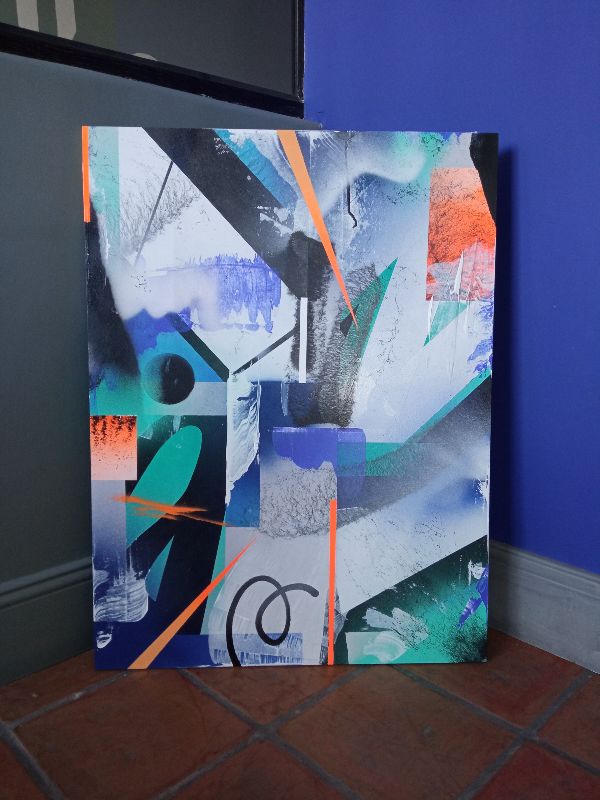
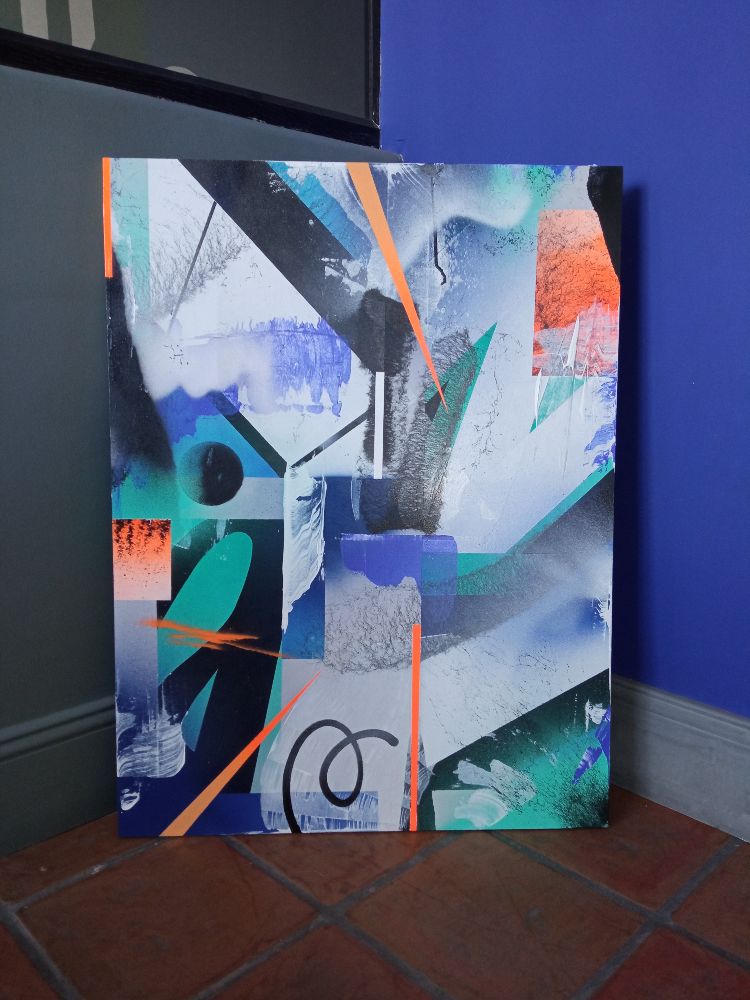
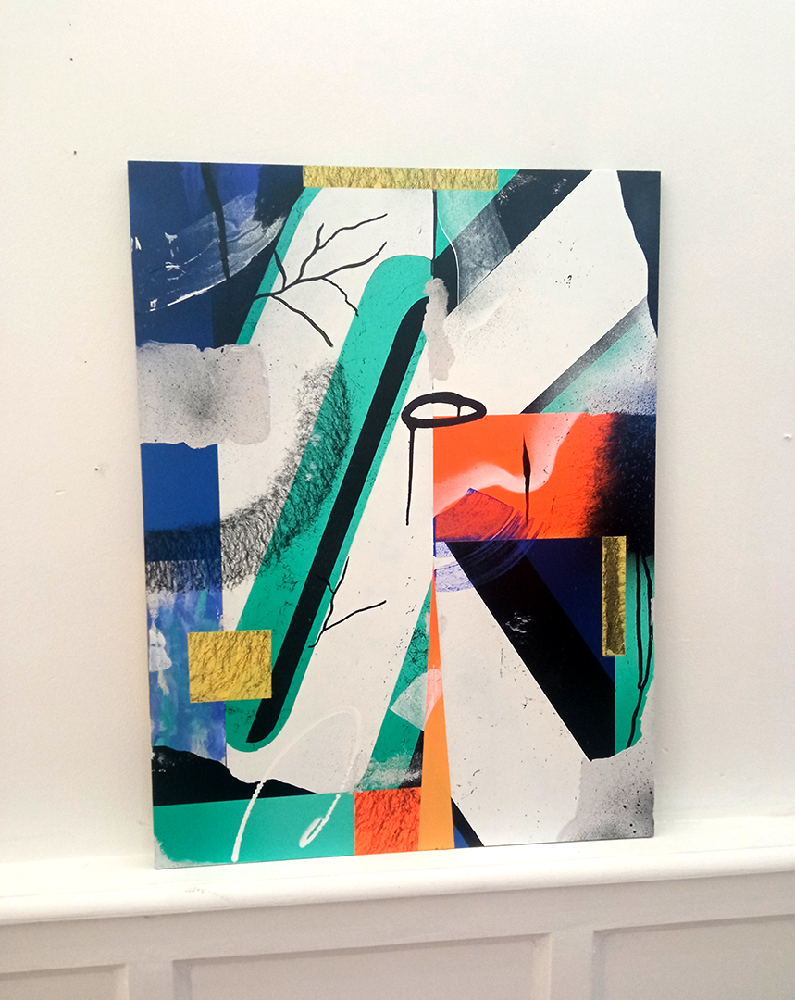
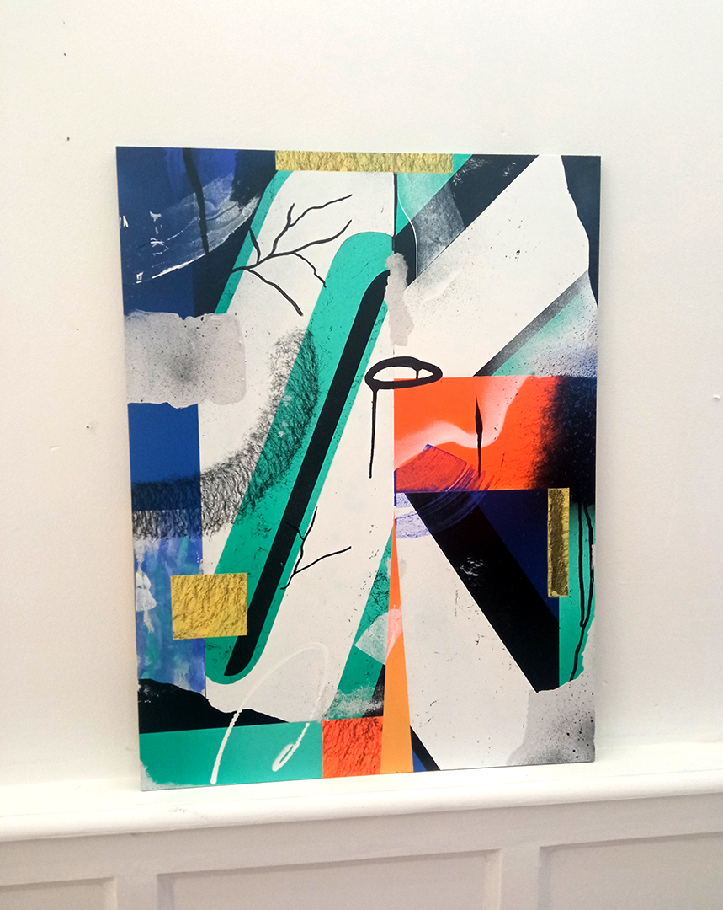

 



EXPOSITIONS
- 2022 L'Expo Urbaine Bourgoin-Jallieu, France
- 2021 Peinture Fraiche Festival Lyon, France
- 2021 Starting Block Lyon, France (Expo Solo)
- 2021 Second Degré Lyon, France
- 2020 Small Session Lyon, France
- 2019 Projet Vénus Décines-Charpieu, France
- 2019 Print-Hop Session #3 Lyon, France
- 2019 Print-Hop Session #2 Lyon, France
- 2018 Print-Hop Session #1 Lyon, France
RESIDENCES
- 2022 Superposition France
- 2021 Boomrang Lyon, France
- 2020 Superposition Lyon, France
EXPOSITION A VENIR
Actuellement aucune exposition n'est à venir.